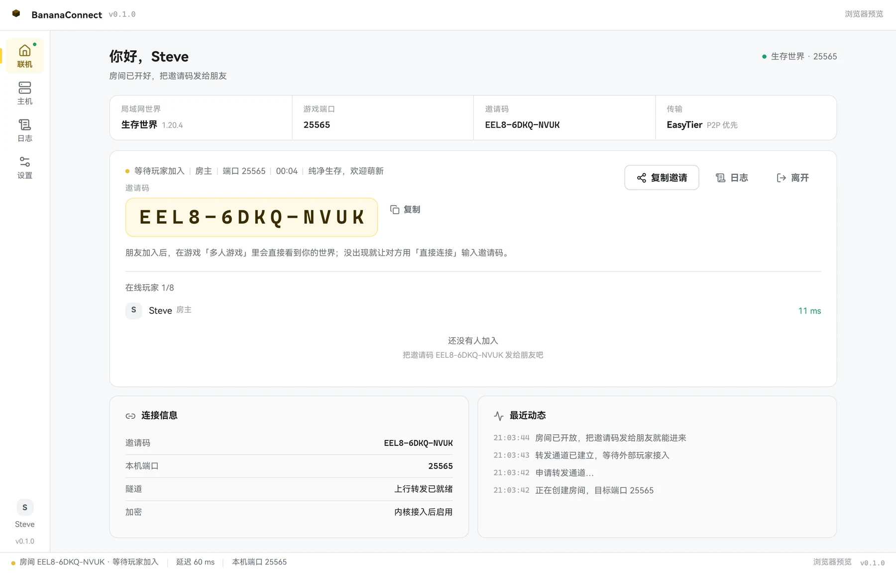
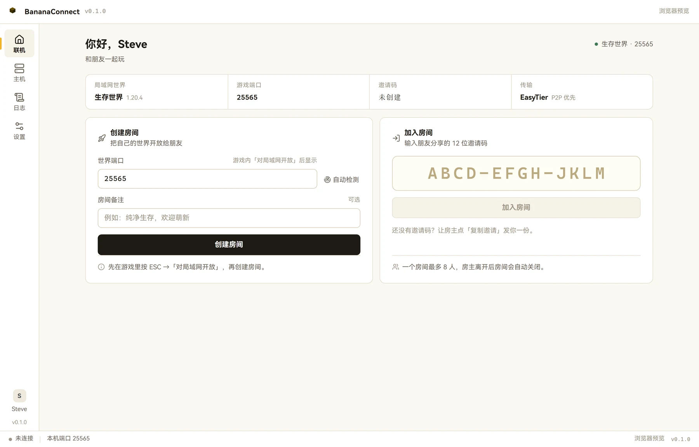
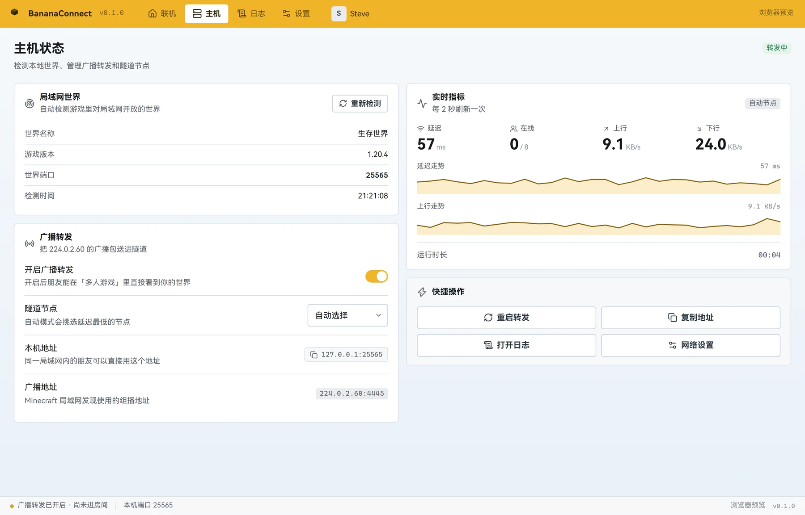
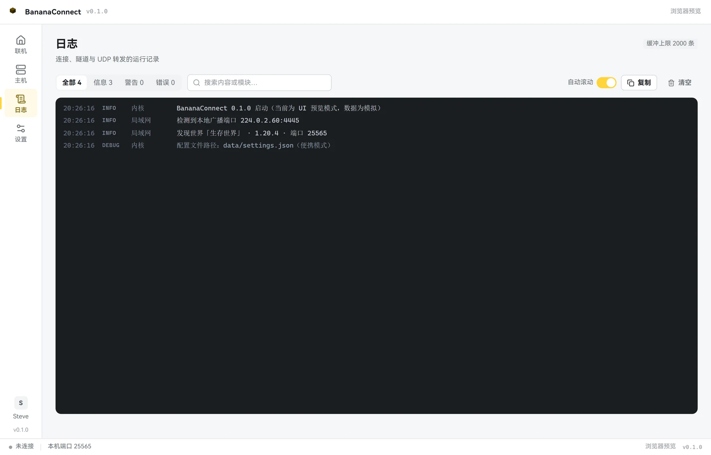
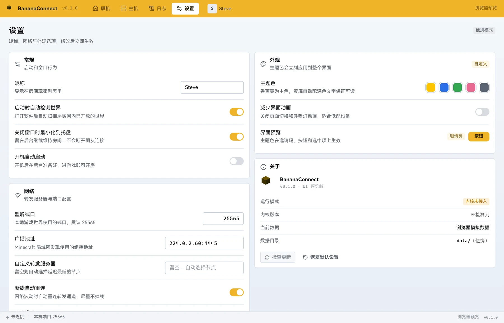
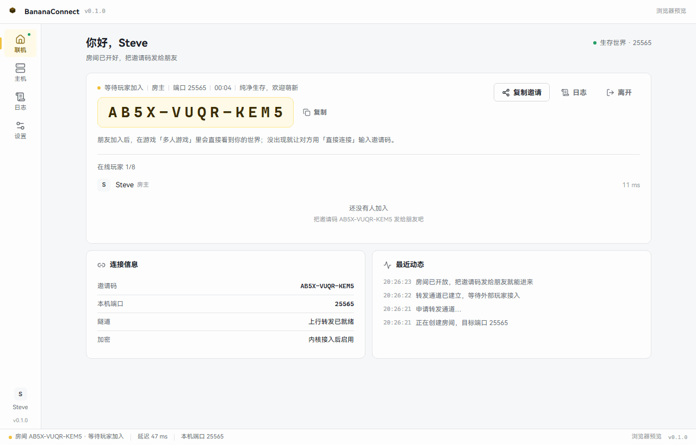

BananaConnect
BananaConnectMINECRAFT · LAN OVER INTERNET
把局域网世界
开出去。
房主在游戏里点「对局域网开放」，这里生成一串 12 位邀请码。朋友输入同一串码， 「多人游戏」里就会出现你的世界。传输优先 P2P 直连，打不通时自动落到公益节点。





房间面板 · 邀请码、在线玩家、最近动态
12位邀请码
260组合空间
4445广播中继端口
P2P优先，失败中转
SCENE 01 · 房间
一串码，
换一个能进的世界。
网络名、密钥、虚拟网段都从这串码派生，不需要账号、不需要注册、不经过我们的服务器。
- 0132 字母表，12 位，约 2⁶⁰ 种组合，猜不中
- 02复制邀请 → 朋友粘贴 → 直接进房间
- 03房主退出即房间关闭，不残留进程
SCENE 02 · 传输
先直连，
再谈别的。
基于 EasyTier 做 NAT 穿透：两端能直连就走直连，延迟按实际链路算；打不通才落到公益共享节点中转，不会一直卡在「连接中」。
- 01WireGuard 加密，虚拟网段按房间隔离
- 02支持 TCP / UDP / WS 多种承载
- 03打洞失败自动中转，状态栏会写明当前路径
SCENE 03 · 列表
世界自己出现，
不用记虚拟 IP。
朋友端把房主的 4445 广播改写成本地代理端口再发出去，游戏客户端就把它当成局域网世界。
房主224.0.2.60:4445
→
虚拟网络P2P / 中转
→
朋友改写端口后重播
Steve 的世界
局域网世界（未开放）
TRADE-OFFS
为什么不是另一种做法
| 方案 | 传输 | 列表出现 | 打洞失败 |
|---|---|---|---|
| PCL CE / MCTier 系 | EasyTier 虚拟局域网 | 多数要手填虚拟 IP | 公共节点中转 |
| XMCL 系 | WebRTC 打洞 | 本地代理 + 广播注入 | 需要自建 TURN |
| BananaConnect | EasyTier + 自建代理 | 广播中继，列表直出 | 自动走公益节点 |
RECORDING
实际录制

HONEST NOTES
先把限制说清楚
首次启动需要管理员权限，用来安装虚拟网卡（WinTun）。
公益节点由社区提供，可能限速、排队或临时不可用。
朋友也要装同一个客户端，双方都跑 EasyTier 才能互通。
离线联机需要房主侧关闭正版验证，这不是本工具能改的。
当前是预览版：房间与进程管理已接 EasyTier，玩家列表与流量指标仍在接入。
传输层使用 EasyTier（Apache-2.0），不打包任何 Minecraft 官方素材。
QUICK START
三步
装好，允许网络组件
解压即用；第一次创建房间会请求一次管理员权限。
游戏里开放局域网
ESC →「对局域网开放」，回到客户端点创建房间。
把邀请码发出去
朋友输入后等两三秒，进「多人游戏」就能看到世界。